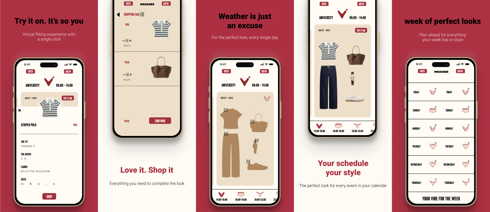
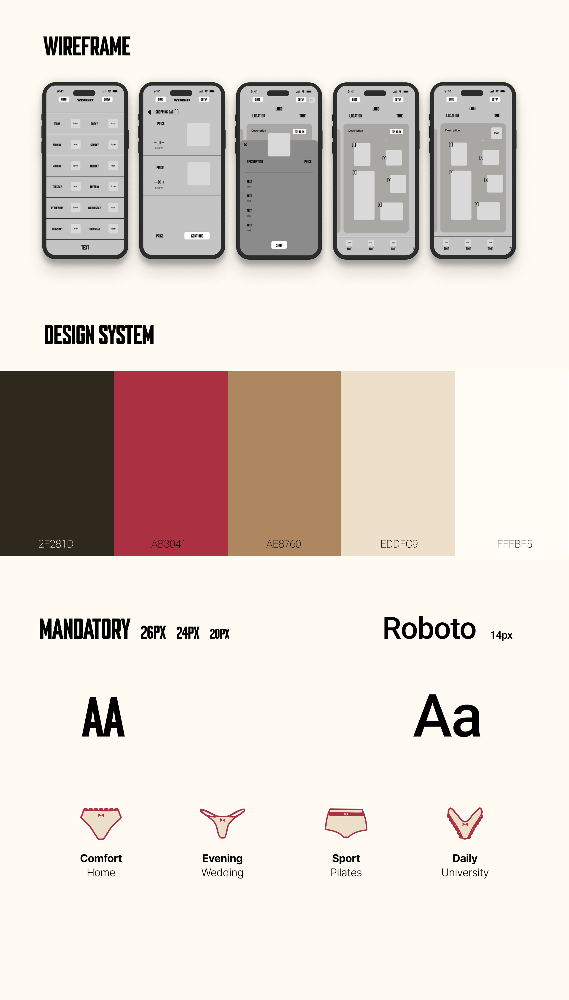

"Wearher" is a weather and schedule based styling app that double functions as a critique of the Influencer Trap. Inspired by Kim Kardashian's marketing tactics, it explores how everyday lifestyle advice and FOMO are leveraged to drive seamless consumer spending.


Modern influencer culture blurs the line between personal utility and aggressive marketing, transforming daily habits into calculated shopping triggers.
A conceptual weather app inspired by Kim Kardashian's marketing tactics. It uses daily weather and schedule updates as a pretext to push new outfits, leveraging FOMO to turn routine decisions into sales opportunities.